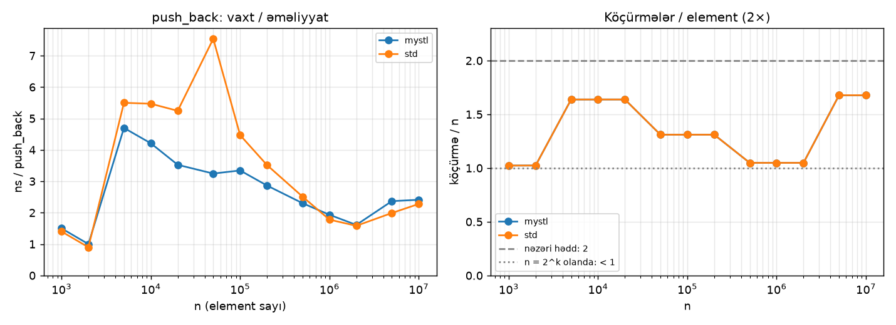
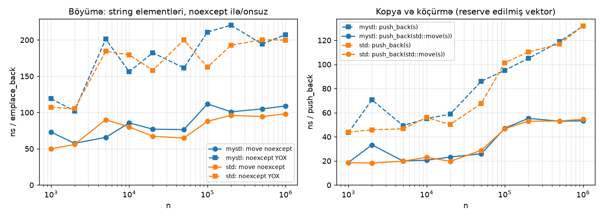
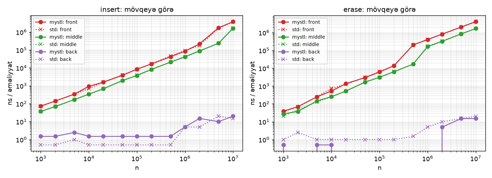
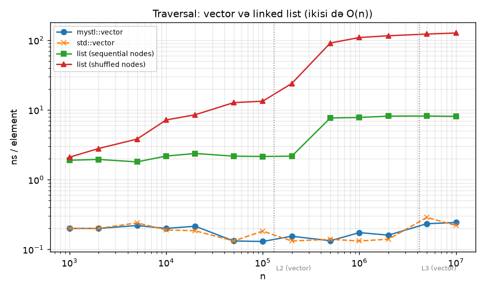
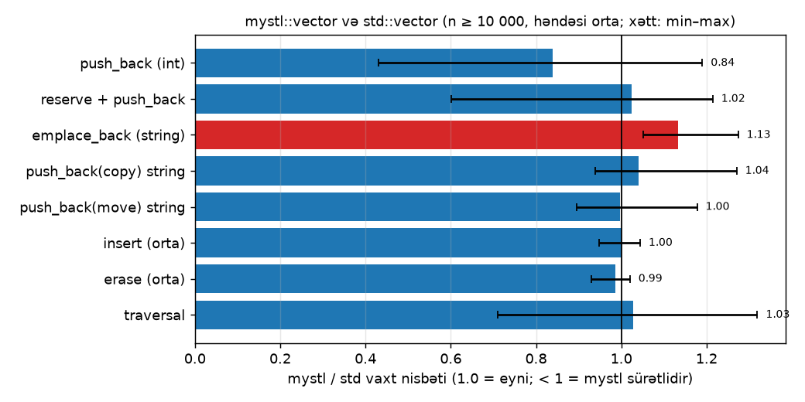
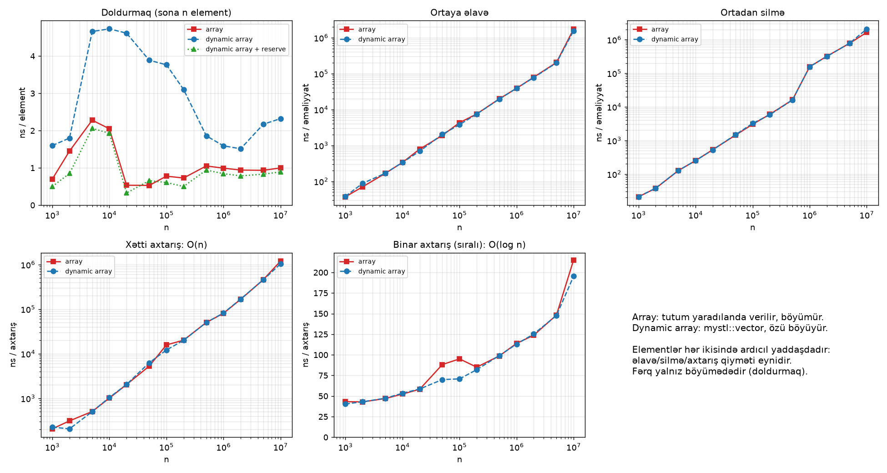

std::vector-un sıfırdan implementasiyası:| Fənn | Müasir data strukturları və alqoritmləri (M666aS) |
| Növ | Texniki hesabat (sərbəst iş) |
| Müəllif | Rahim Shikhgayibov |
| Müəllim | Məmmədov Kamran |
| Tarix | Noyabr 2026 |
| Mənbə kodu | github.com/RahimShikhgayibov/cpp-vector-from-scratch |
| Dil, kompilyator | C++20, g++ 16.2 (MinGW-w64), CMake, doctest |
std::vector-un tam işlək analoqu — mystl::vector<T> — sıfırdan yazılıb.
İnterfeys custom allocator və vector<bool> xaric tamdır: 7 constructor, bütün giriş, iterator, tutum və
modifikator metodları, C++20 müqayisə operatorları. İmplementasiya beş versiyada (v1–v5) təkamül edib: hər
versiya əvvəlkinin konkret problemini həll edir. Düzgünlük 177 unit test, std::vector ilə 2 milyon
əməliyyatlıq differential test, 289 exception ssenarisi və 99% sətir coverage-i ilə yoxlanılıb.
Yeddi tədqiqat sualı ölçmə ilə cavablandırılıb: push_back-in amortized O(1) olduğu təsdiqlənib
(köçürmələr < 2n), noexcept-in unudulması böyüməni 2 dəfə yavaşladır, linked list traversal-ı
vektordan 10–600 dəfə yavaşdır, mystl::vector isə std::vector ilə praktik olaraq eyni sürətdədir.
Niyə dinamik massiv? Adi C++ massivinin ölçüsü kompilyasiya vaxtı sabitdir. Proqramların əksəriyyəti isə
neçə element olacağını əvvəlcədən bilmir. Dinamik massiv elementləri yaddaşda ardıcıl saxlayır (O(1) indeksləmə,
cache-dostu traversal) və lazım olduqca böyüyür. std::vector C++-da ən çox istifadə olunan konteynerdir.
Niyə sıfırdan? std::vector-u istifadə etmək asandır, amma onun düzgün implementasiyası C++-ın ən çətin
mövzularını tələb edir: obyektin ömrünün əl ilə idarəsi, xam yaddaş və placement new, rule of three/five, move semantics,
exception safety, template-lər. Layihənin məqsədi bu mövzuları işlək kodla öyrənmək və nəticəni test və ölçmə ilə sübut etməkdir.
Tədqiqat sualları. (1) push_back həqiqətən amortized O(1)-dirmi? (2) 2× və 1.5× böyümə faktorundan hansı
yaxşıdır? (3) reserve nə qədər qazandırır? (4) Copy ilə move arasındakı fərq nədir, noexcept unudulanda nə baş verir?
(5) Ortaya insert/erase praktikada nə qədər bahadır? (6) Cache-in təsiri nə qədərdir? (7) Nəticə std::vector-a nə qədər yaxındır?
(8) Adi Array ilə Dynamic Array əlavə, silmə və axtarışda necə fərqlənir?
Əhatə. std::vector-un bütün üzv və sərbəst funksiyaları. Bilərəkdən kənarda qalanlar: custom allocator
dəstəyi və vector<bool> ixtisaslaşması.
size_ canlı obyekt, qalan hissə xam (obyektsiz) yaddaşdır.Vektor üç üzvdən ibarətdir: T* data_, size_t size_, size_t capacity_. Yaddaş və obyektlər
ayrı idarə olunur: yaddaş ::operator new ilə xam şəkildə alınır, obyekt yalnız element əlavə olunanda
std::construct_at (placement new) ilə qurulur və silinəndə std::destroy_at ilə dərhal dağıdılır.
Bu model new T[n]-in üç problemini həll edir: default constructor tələbi, reserve-in lazımsız obyektlər
qurması və pop_back-in obyekti dağıda bilməməsi.
size_ ≤ capacity_;capacity_ = 0 ⇒ data_ = nullptr;[0, size_) yerlərində dəqiq size_ canlı obyekt var, [size_, capacity_) xamdır;Hər public metod bu invariantları qoruyur. Exception halında da qorunurlar (bax 2.4).
Vektor dolanda yeni capacity max(Growth::next(capacity), tələb) olur. Growth template parametridir (policy-based design):
growth::doubling (2×, default, libstdc++ və libc++ kimi) və growth::one_and_half (1.5×, MSVC kimi). Seçim
kompilyasiya vaxtı edilir, işləmə vaxtında xərc yoxdur. Böyümə zamanı elementlər std::move_if_noexcept ilə daşınır:
move constructor noexcept-dirsə köçürülür, deyilsə strong guarantee üçün kopyalanır.
Yenidən ayırma tələb edən bütün əməliyyatlar eyni sxemə əməl edir: riskli iş əvvəl, geri dönüşü olmayan iş sonda.
Yeni buffer tam hazırlanır (əvvəl yeni elementlər, sonra köhnələrin köçürülməsi), hər addımın öz catch bloku var.
Köhnə buffer yalnız heç nə uğursuz ola bilməyəndə noexcept funksiya ilə atılır. Nəticədə push_back,
emplace_back, reserve, resize, shrink_to_fit, sona insert, copy assignment və
assign strong guarantee verir. Ortaya insert/erase std::vector kimi basic guarantee verir.
Constructor-lar default constructor-a delegate edir: gövdədə exception olsa destructor çağırılır və heç nə sızmır.
Alias təhlükəsizliyi. v.push_back(v[0]) və v.insert(v.begin(), v.back()) kimi çağırışlarda arqument
vektorun öz elementidir. Yeni element köhnə buffer dağıdılmamışdan və heç bir element sürüşdürülməmişdən əvvəl qurulur.
| Versiya | Əlavə olunan | Həll etdiyi problem | Nümayiş |
|---|---|---|---|
| v1 | int*, size, capacity, 2× böyümə | sabit ölçülü massiv | 10⁶ push_back |
| v2 | copy constructor, copy assignment (copy-and-swap) | kompilyatorun shallow copy-si: asılı kopyalar və double free | Windows-da 0xC0000374 (heap corruption) |
| v3 | template <typename T> | yalnız int | vector<string>, vector<vector<int>> |
| v4 | ::operator new + placement new, reserve, pop_back | new T[]-in üç problemi; push_back(v[0])-dakı use-after-free | Noisy çıxışlarının müqayisəsi; "zəhərli" destructor: −1 və 42 |
| v5 | move constructor/assignment, push_back(T&&), move_if_noexcept | lazımsız kopyalar; yalnız köçürülə bilən tiplər | vector<unique_ptr<int>>; noexcept ilə və onsuz böyümə |
Faza B-də interfeys tamamlandı (iterator-lar, bütün constructor-lar, resize, insert, erase, emplace,
<=>, böyümə siyasəti). v3-dəki push_back(v[0]) bug-ı v4-ün testi ilə tapılıb. Həmin test v3-ün kodunda
gözlənilən 42 əvəzinə −1 qaytarırdı.
| Əməliyyat | Zaman | Qeyd |
|---|---|---|
operator[], at, front, back, data, iterator-lar | O(1) | at sərhədi yoxlayır |
size, capacity, empty, max_size, swap | O(1) | |
push_back, emplace_back | amortized O(1), ən pis O(n) | isbat: 4.1 |
pop_back | O(1) | bir destructor |
insert/emplace (bir element, pos-a) | O(n − pos) + amortized O(1) | sonda amortized O(1) |
insert(pos, k, value), insert(pos, first, last) | O(k + n − pos) | sona əlavə + std::rotate |
erase(pos), erase(first, last) | O(n − pos) | sürüşdürmə + destructor-lar |
clear, destructor | O(n) | yaddaş (clear-də) qalır |
reserve(m), shrink_to_fit | O(n) (buffer dəyişərsə), yoxsa O(1) | |
resize(m) | O(|m − n|) + yenidən ayırma | |
copy constructor, copy assignment, assign | O(n) | |
| move constructor | O(1) | yalnız 3 üzv dəyişir |
| move assignment | O(m) | m: hədəfin köhnə elementləri dağıdılır |
==, <=>, mystl::erase, erase_if | O(n) |
Yaddaş. Elementlər üçün capacity · sizeof(T) bayt. Boş yer 2× siyasətdə ən çoxu 50%, 1.5× siyasətdə 33%-dir
(ölçülmüş orta: 26% və 17%). Yenidən ayırma zamanı köhnə və yeni buffer bir anda mövcuddur: müvəqqəti olaraq ~(1 + α)·n element.
push_back üçün amortized O(1) isbatıAggregate metodu. Boş vektora ardıcıl n push_back edilir, böyümə faktoru α = 2. i-ci əməliyyatın qiyməti
1 (yazmaq) üstəgəl, vektor dolu idisə, i − 1 köçürmədir. Capacity 1, 2, 4, … ardıcıllığı ilə böyüdüyü üçün köçürmələr
yalnız i − 1 2-nin qüvvəti olanda baş verir:
T(n) = n + Σj=0⌊log₂(n−1)⌋ 2j < n + 2n = 3n
Deməli, əməliyyat başına qiymət T(n)/n < 3, yəni O(1). Ümumi faktor α > 1 üçün son capacity C < α·n, köçürmələr isə C/α + C/α² + … < C/(α − 1) < α·n/(α − 1). α = 2 üçün < 2n, α = 1.5 üçün < 3n alınır. Ölçülən dəyərlər (n = 10⁷: 1.68n və 2.39n) bu hədlərə uyğundur.
Accounting metodu. Hər push_back-ə 3 vahid "ödəniş" yazılır: 1 vahid elementin yazılmasına sərf olunur, 2 vahid
kredit kimi elementin üzərində saxlanılır. Capacity C-dən 2C-yə böyüyəndə buffer-in son C/2 elementi (sonuncu böyümədən sonra
əlavə olunanlar) cəmi C vahid kredit daşıyır. Bu, bütün C elementin köçürülməsini ödəyir: hər element öz köçürməsini, həm
də artıq krediti qalmamış birinci yarıdan bir elementin köçürməsini ödəyir. Kredit heç vaxt mənfi olmur, ona görə amortized
qiymət ≤ 3 = O(1). Əlavə etmənin həndəsi olması vacibdir: capacity sabit k qədər artsaydı, köçürmələr Σ k·i ≈ n²/(2k),
yəni O(n²) olardı.
| Səviyyə | Həcm | Nəyi tutur |
|---|---|---|
| Unit testlər (doctest) | 177 test, 10 958 yoxlama | hər metodun məntiqi, kənar hallar |
Sayğac tipi Tracked | bütün ömür testləri | sızma, ikiqat destructor, lazımsız kopya (Windows-da ASan əvəzi) |
| Exception injection | 289 ssenari | push_back və reserve-də hər mümkün exception nöqtəsində strong guarantee |
| Differential test | 2 × 10 seed × 100 000 | std::vector ilə hər addımdan sonra müqayisə, 30 növ əməliyyat |
| Edge case-lər | 15 test | boş vektor, self-assignment, alias halları, sərhədlər, moved-from |
| Mutation testing | 6 səhv | bilərəkdən salınan hər səhvi ən azı bir test tutdu |
| Coverage (gcov) | 99% (296/299) | qalan 3 sətir: >4·10¹⁸ bayt tələb edən müdafiə yoxlamaları |
| Sanitizer-lər | Windows: UBSan; Linux: ASan + UBSan | use-after-free, overflow, undefined behavior |
Test tipləri. int (əsas məntiq), std::string (heap-ə sahib obyektlər; SSO-nun səhvləri gizlətməməsi üçün
uzun sətirlər), Tracked (sayğac; default constructor-u yoxdur; k-cı kopyada exception ata bilir),
std::unique_ptr<int> (yalnız köçürülə bilən), Poisoned (destructor dəyəri pozur, use-after-free-ni
ASan-sız göstərir), alignas(64) tip (hizalama).
Testlərin tapdığı səhvlər. v3-də push_back(v[0]) zamanı use-after-free; izahlarda amortized hədd üçün səhv iddia
("n-dən az köçürmə" yalnız n = 2k üçün doğrudur, düzgün hədd 2n-dir); test kodunun özündə ==-in hesablanma
sırasından asılı etibarsız iterator müqayisəsi.
Sanitizer nəticəsi. Windows MinGW-də ASan kitabxanası olmadığı üçün bütün Debug build-lər UBSan (trap rejimi) ilə
işləyir. Linux-da (Docker, g++ 14.4) bütün unit testlər və differential test -fsanitize=address,undefined ilə
təmiz keçib. Nəzarət üçün bilərəkdən səhv yazılmış iki proqram da işə salınıb. ASan ikisini də tutub
(detected memory leaks, attempting double-free), deməli həqiqətən işləyir. Hər iki kompilyatorda
(g++ 16.2 və 14.4) -Wall -Wextra -Wpedantic ilə warning yoxdur.
Metodologiya. Release build (-O2), std::chrono::steady_clock, 1 ısınma + 9 təkrar, median.
Nəticələr g_sink-ə yığılır, kompilyator kodu silə bilmir. n = 10³…10⁷ (onluq başına 1, 2, 5). Hər ölçmədə
std::vector (libstdc++) müqayisə xəttidir. Avadanlıq: AMD Ryzen 7 PRO 5850U (8 nüvə, L2 512 KB/nüvə, L3 16 MB),
31 GB RAM, Windows 11 Pro 23H2, g++ 16.2.0. Ölçmələr noutbukda, CPU tezliyi sabitlənmədən aparılıb. Tək nöqtədə ±20–30% səs-küy
ola bilər, ona görə nəticələr trendlərə əsasən şərh olunur.


noexcept-in və copy/move-un təsiri.1. Amortized O(1). Təsdiqləndi. n 10 000 dəfə artanda push_back vaxtı 1–5 ns aralığında qalır, köçürmə sayı
həmişə < 2n-dir (n = 10⁷: 1.68n). std::vector-un köçürmə sayı bizimki ilə tam eynidir.
2. 2× və 1.5×. Trade-off. 2× təxminən 20–35% sürətlidir (n = 10⁷: 25 və 41 yenidən ayırma). 1.5× daha az yaddaş itirir (orta boş yer 17% və 26%, ən pis hal 33% və 50%).
3. reserve. 1.8–14× qazanc. Ən böyüyü orta ölçülərdədir (10⁵: 9.5×). Böyük n-də darboğaz yaddaşın özü olur.
4. Copy/move, noexcept. Sətirlər üçün köçürmə kopyadan ~2.5× ucuzdur. Move constructor-da noexcept
unudulanda böyümə zamanı elementlər kopyalanır və vektor ~2 dəfə yavaşlayır (109 → 207 ns/op). std::vector-da da eynidir.

insert/erase.
5. Ortaya insert/erase. O(n): log-log qrafikdə düz xətt. Orta əvvəlin yarısıdır. n = 10⁷-də əvvələ bir
insert ~3.8 ms çəkir, sona isə ~20 ns.
6. Cache. İkisi də O(n), amma vektor ~0.2 ns/element, ardıcıl düyünlü list ~2–8 ns, qarışıq düyünlü list ~127 ns-dir (500–600×). Qarışıq list-də L3 (16 MB) dolanda (~5·10⁵ düyün) kəskin sıçrayış görünür: hər addım RAM-a müraciət olur.

7. std::vector-a yaxınlıq. 8 əməliyyatdan 7-sində nisbət 0.84–1.04-dür (səs-küy səviyyəsində). emplace_back
(string) ardıcıl olaraq ~10% yavaşdır (1.05–1.27). Ehtimal olunan səbəb böyümə yolunun daha az optimallaşdırılmasıdır
(profiler ilə araşdırılmayıb). İlk cəhddə tək n = 10⁶ nöqtəsi götürülmüş və bəzi əməliyyatlar 1.3× yavaş görünmüşdü. Bu,
metodun çox nöqtənin həndəsi ortasına dəyişdirilməsinə səbəb oldu.

mystl::vector): doldurmaq, ortaya əlavə, ortadan silmə, xətti və binar axtarış.8. Array və Dynamic Array. Sabit tutumlu adi massiv (FixedArray) ilə dinamik massiv beş əməliyyatda müqayisə
olunub. Ortaya əlavə, silmə, xətti və binar axtarışın qiyməti eynidir (xətlər üst-üstə düşür), çünki hər ikisində
elementlər ardıcıl yaddaşdadır. Mürəkkəbliklər nəzəriyyəyə uyğundur: əlavə/silmə/xətti axtarış O(n), binar axtarış
O(log n) (n = 10³ → 10⁷: 43 → 215 ns). Yeganə fərq doldurmaqdadır: reserve-siz dinamik massiv böyümə zamanı köçürmə
etdiyi üçün 2–5 dəfə yavaşdır, reserve ilə isə adi massiv qədər sürətlidir. Bunun müqabilində adi massivin ölçüsünü
əvvəlcədən bilmək lazımdır.
std::allocator_traits) və vector<bool>.assign həmişə yeni buffer ayırır ("qur, sonra swap"). std::vector isə yetərli buffer-i təkrar istifadə edir.
Qazanc: strong guarantee və v.assign(v.begin(), v.end())-in təhlükəsizliyi (std::vector-da bu UB-dir).insert sona əlavə + std::rotate ilə işləyir: sadədir və alias-a qarşı təhlükəsizdir,
amma ən optimal alqoritmdən bir az çox köçürmə edir.emplace_back(string) böyümə yolunda ~10% yavaşlıq var. Araşdırılması gələcək işdir.std::vector-un tam interfeysi (allocator və vector<bool> xaric) C++20-də sıfırdan implementasiya olunub.
Beş versiyalıq təkamül hər mühüm C++ anlayışını (obyektin ömrü, rule of three/five, template, xam yaddaş, move semantics)
konkret problem üzərində göstərir. Düzgünlük çoxsəviyyəli testlə yoxlanılıb: unit, sayğac, exception injection, differential,
mutation və coverage. Ölçmələr nəzəriyyəni təsdiqləyir (amortized O(1), köçürmələr < 2n). Praktik nəticələr isə göstərir ki,
asimptotik mürəkkəblik bütün mənzərəni vermir: eyni O(n) traversal-da cache 600 dəfəyə qədər fərq yaradır, bir unudulmuş
noexcept isə vektoru 2 dəfə yavaşladır. Nəticədə mystl::vector std::vector ilə praktik olaraq eyni sürətdədir.
noexcept, perfect forwarding.std::vector, std::construct_at, std::move_if_noexcept, iterator invalidation.bits/stl_vector.h (öz versiyanı yazdıqdan sonra müqayisə üçün).